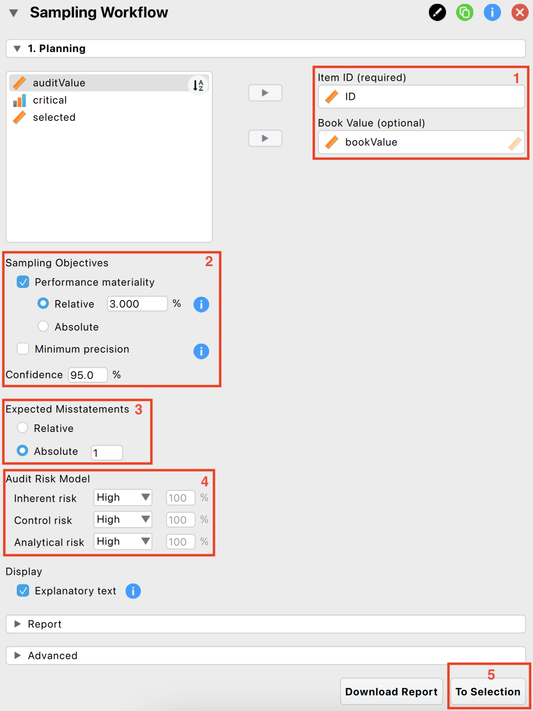
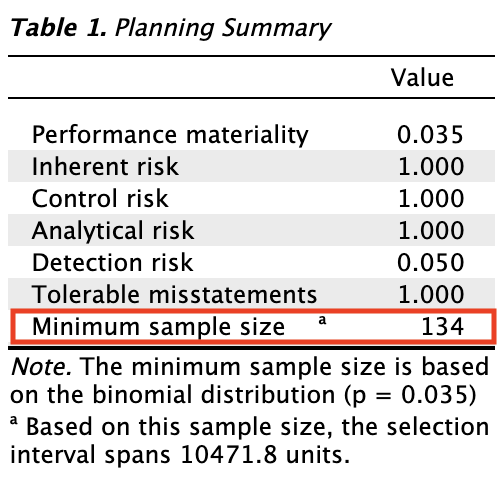
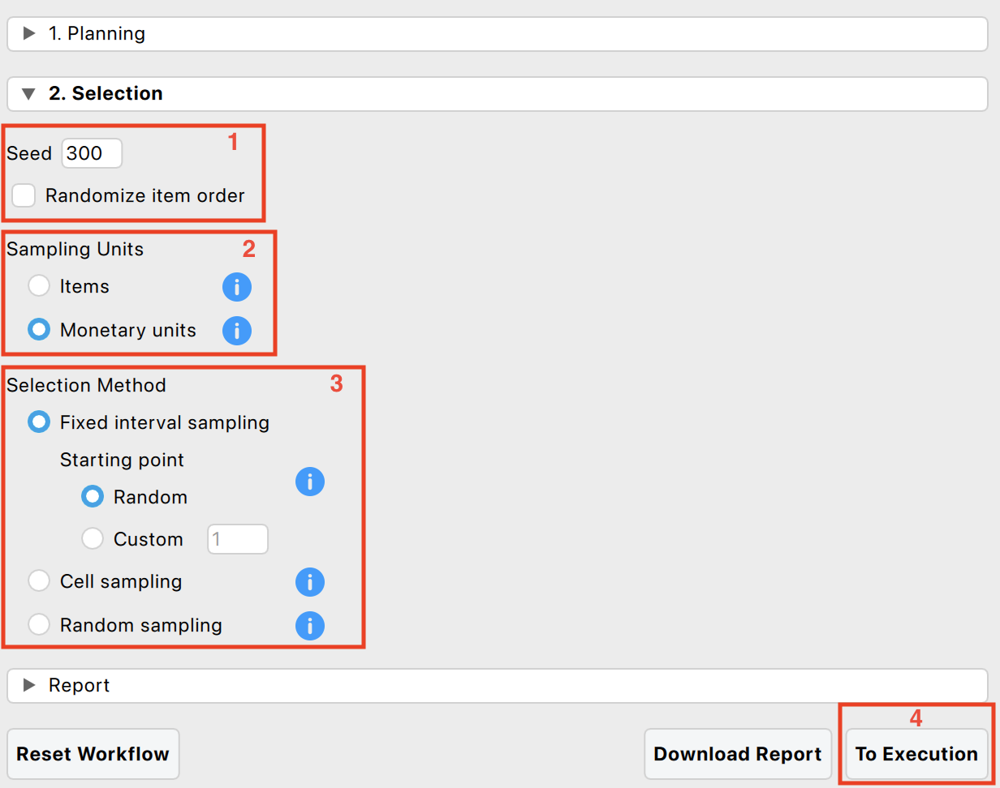

1 Sampling Workflow
The goal of statistical audit sampling is to infer the misstatement in a population based on a representative sample. This can be challenging, but the Audit module simplifies the process into four stages: planning, selection, execution, and evaluation.

1.1 Theory behind the audit sampling workflow
More detailed information about the individual stages in the audit sampling workflow is provided below.
1.1.1 Stage 1: Planning
In the planning stage, you determine the sample size needed to support the assertion that the population’s misstatement is below the performance materiality. This involves using prior audit outcomes and information about inherent risk and control risk. Expectations about error rates also influence the sample size required to maintain statistical confidence.
1.1.2 Stage 2: Selection
Using the sample size from the planning stage, you select a statistically representative sample. Each sampling unit receives an inclusion probability, and units are selected based on these probabilities. Monetary unit sampling assigns probabilities to individual monetary units, making higher-value items more likely to be selected. Record sampling assigns equal probabilities to all items.
1.1.3 Stage 3: Execution
In the execution stage, you assess the correctness of selected items. The simplest method categorizes items as correct or incorrect, while a more accurate method considers the true value (audit value) of items. Annotating samples with audit values provides a more precise estimate of misstatement. If book values are unavailable, use the correct/incorrect method.
1.1.4 Stage 4: Evaluation
In the evaluation stage, you use the annotated sample to infer the total misstatement in the population. Statistical techniques calculate a projected maximum misstatement, and the population is approved if this is below the performance materiality.
1.2 The audit sampling workflow in JASP
The Audit module in JASP offers two ways to navigate the audit sampling workflow: the Sampling Workflow analysis, which guides you through all four stages, and individual analyses for Planning, Selection, and Evaluation. This chapter uses the Sampling Workflow analysis to explain the Audit module’s core functionality.
Let’s explore an example of the audit sampling workflow. To follow along, open the ‘Testing for Overstatements’ dataset from the Data Library. Navigate to the top-left menu, click ‘Open’, then ‘Data Library’, select ‘7. Audit’, and finally click on the text ‘Testing for Overstatements’ (not the green JASP-icon button).

This will open a dataset with three columns: ‘ID’, ‘bookValue’, and ‘auditValue’. The ‘ID’ column represents the identification number of the items in the population. The ‘bookValue’ column shows the recorded values of the items, while the ‘auditValue’ column displays the true values. The ‘auditValue’ column is included for illustrative purposes, as auditors typically know the true values only for the audited sample, not for all items in the population.

1.2.1 Stage 1: Planning
To start the sampling workflow, click on the Audit module icon and select ‘Sampling Workflow’. This will open the following interface, where you need to fill in the options for the statistical analysis.

First, enter the variable indicating the identification numbers of the items in the corresponding box (indicated with a 1). Optionally, if you have access to the book values of the items, you can enter this variable as well.
Next, formulate your sampling objectives (indicated with a 2). Enable the ‘Performance materiality’ objective if you want to test whether the total misstatement in the population exceeds a certain limit (i.e., the performance materiality). This approach allows you to plan a sample such that, when the sample meets your expectations, the maximum error is said to be below performance materiality. Enable the ‘Minimum precision’ objective if you want to obtain a required minimum precision when estimating the total misstatement in the population. This approach allows you to plan a sample such that, when the sample meets expectations, the uncertainty of your estimate is within a tolerable percentage. In the example, we choose a performance materiality of 3.5%.
Then, indicate how many misstatements are tolerable in the sample (indicated with a 3). In the example, we choose to tolerate one full misstatement in the sample.
Additionally, indicate the risks of material misstatement via the audit risk model (indicated with a 4). According to the Audit Risk Model, audit risk can be divided into three constituents: inherent risk, control risk, and detection risk. Inherent risk is the risk posed by an error in a financial statement due to a factor other than a failure of internal controls. Control risk is the probability that a material misstatement is not prevented or detected by the internal control systems of the company (e.g., computer-managed databases). Both these risks are commonly assessed by the auditor on a 3-point scale consisting of low, medium, and high categories. Detection risk is the probability that an auditor will fail to find material misstatements in an organization’s financial statements. For a given level of audit risk, the tolerable level of detection risk bears an inverse relationship to the other two assessed risks. Intuitively, a greater risk of material misstatement should require a lower tolerable detection risk and, accordingly, more persuasive audit evidence. Here, we choose to set all risks to ‘High’.
The output below shows that the required sample size for these options is 134 items.

Finally, progress to the selection stage by clicking the ‘To Selection’ button (indicated with a 5).
1.2.2 Stage 2: Selection


1.2.3 Stage 3: Execution

1.2.4 Stage 4: Evaluation